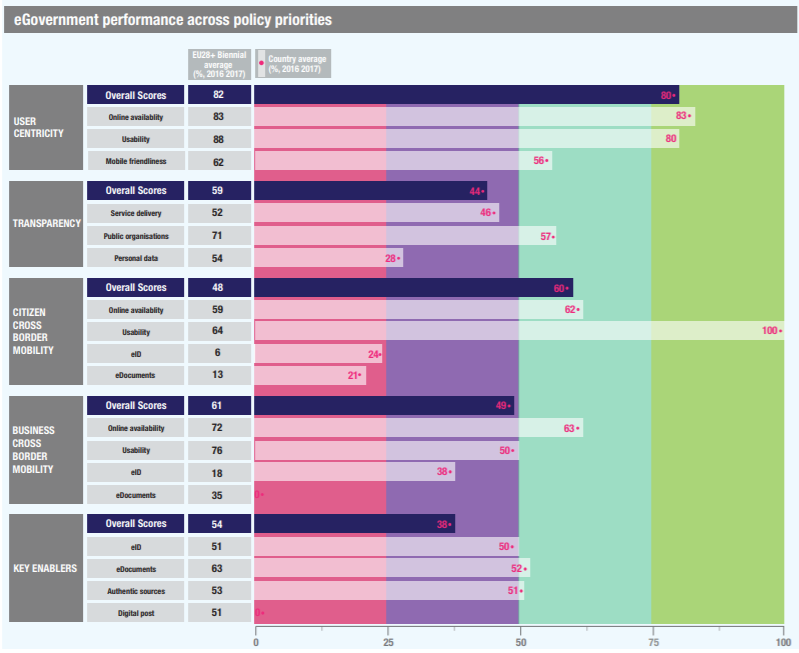

ISA2
Table of Contents
Digital Government Factsheet 2019
Slovenia
ISA2
Country Profile 3
Digital Government Highlights 6
Digital Government Political Communications 7
Digital Government Legislation 13
Digital Government Governance 18
Digital Government Infrastructure 24
Digital Government Services for Citizens 35
Digital Government Services for Businesses 45
Country Profile
Basic data
Population: 2 066 880 inhabitants (2018)
GDP at market prices: 45 947 million Euros (2018)
GDP per inhabitant in PPS (Purchasing Power Standard EU 28=100): 85% (2017)
GDP growth rate: 4.5% (2018)
Inflation rate: 1.9% (2018)
Unemployment rate: 5.4% (2018)
General government gross debt (Percentage of GDP): 70.1% (2018)
General government deficit/surplus (Percentage of GDP): 0.7% (2018)
Area: 20 273 km²
Capital city: Ljubljana
Official EU language: Slovenian
Currency: Euro
Source: Eurostat (last update: 15 March 2019)
Digital Government Indicators
The following graphs present data for the latest eGovernment Indicators for Slovenia compared to the EU average. Statistical indicators in this section reflect those of Eurostat at the time the Edition is being prepared.
Digital Government State of Play
The graph below is the result of the latest eGovernment Benchmark report, which monitors the development of eGovernment in Europe, based on specific indicators. These indicators are clustered within four main top-level benchmarks:
- User Centricity – indicates to what extent (information about) a service is provided online and how this is perceived.
- Transparency– indicates to what extent governments are transparent regarding: i) their own responsibilities and performance, ii) the process of service delivery and iii) personal data involved.
- Cross-Border Mobility – indicates to what extent EU citizens and businesses can use online services in another country.
- Key Enablers – indicates the extent to which five technical pre-conditions are available online. There are: Identification (eID), Electronic documents (eDocuments), Authoritative Sources, and Digital Post. Digital Post refers to the possibility that governments communicate electronically-only with citizens or entrepreneurs through e.g. personal mailboxes or other digital mail solutions.
These top-level benchmarks are measured using a life-events (e.g. mystery shopping) approach. Eight life events are included in the overall eGovernment performance score. Four of these life events were measured in 2013, 2015 and 2017 and the other four were measured in 2012, 2014, 2016, and again in 2018. The life events measured in 2017 were Regular business operations, Moving, Owning and driving a car and Starting a small claims procedure. The life events measured in 2018 are Business start-up, Losing and finding a job, Family life and Studying.
Source: eGovernment Benchmark Report 2018 Country Factsheet
Digital Government Highlights
Digital Government Political Communications
Digital Government Legislation
Following Directive (EU) 2016/1148 (NIS Directive), the Act regulated measures to achieve a high level of network and information security in the Republic of Slovenia, which was essential for the smooth functioning of the state in all security conditions. It provided essential services for the preservation of key social and economic activities and regulated the provision of cyber defence in the Republic of Slovenia.
Digital Government Governance
The Ministry of Public Administration is in charge of Digital Government Governance. Rudi Medved was appointed the new Minister of Public Administration. He was assisted by Mojca Ramšak Pešec and Leon Behin as the State Secretaries for the Ministry of Public Administration. In terms of Digital Government, the IT Directorate of the Ministry, led by Mihael Krišelj as Director-General, played the central role.
Digital Government Infrastructure
The Ministry of Public Administration provides central platforms for authentication and trust services. SI-PASS the central authentication and eSignature service, offers the possibility to verify electronic identities in one place and enables remote eSignature according to eIDAS requirements. The system has already been integrated into most important eGovernment portals. In 2018, a new service, smsPASS, was launched, to enable the use of mobile devices for authentication and eSignature through SI-PASS services. At present, this functionality is enabled for citizens using the main state eGovernment portal.
Digital Government Services for Citizens and Businesses
- As of 1 April 2018, the implementation of mandatory eSubmission tenders in the Slovenian public procurement system was in place. This included access to electronic services for simpler and faster implementation of public procurement procedures.
- The State government portal eUprava, which is managed by the Ministry of Public Administration, is offering and developing eServices for citizens. In 2018, two new important services were launched. Slovenian drivers now have access to their driving record and traffic penalties, and there is an eApplication for organ donations in case of death.
Digital Government Political Communications
Specific political communications on digital government
Information Society Development Strategy to 2020
At the beginning of 2016, the Government of the Republic of Slovenia adopted a long-term strategy on the development of the information society. The detailed objectives of this strategy included:
- Raising general awareness of the importance of information and communications technologies (ICT) and the Internet for the development of society;
- Sustainable, systematic and targeted investment in the development of a digital society;
- General digitalisation according to the “Digital by Default” principle;
- Competitive digital entrepreneurship and digital industry for digital growth;
- Intensive and innovative use of ICT and the Internet in all segments of society;
- High speed access, open internet for all;
- Inclusive digital society;
- Secure cyberspace;
- Trust and confidence in cyberspace and the protection of human rights;
- Slovenia – a point of reference for the deployment of innovative approaches in the use of digital technologies.
The Strategy’s vision called on Slovenia to take advantage of the development opportunities of ICT and the Internet, thus becoming an advanced digital society and reference environment for the deployment of innovative approaches in the use of digital technologies at a systemic level. At the same time, a high level of protection of personal data and communication privacy in a digital society should be ensured. This will create trust and confidence in digitalisation and cyberspace.
The Government favours investments in the digitalisation of entrepreneurship, an innovative data-driven economy, and the development and use of the Internet, smart communities, cities and homes. Within these limits, it favours research and technology development of the ‘Internet of things’, cloud computing, Big Data and mobile technologies. Because the Government wishes to enable equal integration into the single European digital area for Slovenian stakeholders, it innovatively uses ICT and the Internet in all developmental areas. In the future, it will invest in education to promote the digital society.
In order to digitalise the economy and society, to raise greater general awareness on the developmental importance of ICT and the Internet, to improve digital literacy, for the economically active, develop better eSkills, and to create a larger number of skilled ICT professionals, all stakeholders must be connected to Slovenia’s digitalisation, not only industry, but also non-governmental organisations and other stakeholders. For this reason, the Slovenian Digital Coalition was established.
Public Administration 2020 – Slovenian Public Administration Development Strategy 2015 – 2020
The Strategy’s main purpose is to set a platform for a real improvement in the operations of Slovenia’s public administration which is about to undergo modernisation and renewal. Reform will be achieved by introducing a comprehensive management system through centralised strategic planning, introducing quality control systems for the simplification and modernisation of administrative processes, as well as monitoring and evaluation of the work done and targets to be achieved across all levels. Effective public administration cannot be achieved without efficient government IT. It will take advantage of new opportunities and the potential offered by modern technological and organisational approaches, of which cloud computing has one of the greatest potentials. Improving the state of ICT in public administration will have significant synergistic effects in achieving other strategic targets, as well as in the development of the information society as a whole.
This will require effective informatics, the increased use of eServices, digitalisation and interoperability of information solutions, all of which were encompassed in a special strategic objective, The Public Administration Development Strategy 2015-2020 (hereinafter: PADS 2020). In addition to the direct effects on central government, indirect positive impacts were anticipated for the entire public administration (particularly local self-government, public institutions, and agencies), whose business processes are linked to the central government. Efficient governmental IT, argued the Strategy, had the potential to significantly contribute to the digitalisation of business processes and therefore improve the quality, transparency, and accountability in public administration.
Data governance is a prerequisite for data driven developments, operations, decisions, and innovative approaches. In this context, the set of actions are in place. The development of central metadata dictionary is a priority and is also the prerequisite for data repository. A data repository will provide views with different perspectives and contexts, which will be the root for the knowledge and understanding of the data. The repository will provide information on how applications are connected to the data, what institutions are responsible for the data, and how data is used through public administration procedures.
In the context of the Slovenian Public Administration Development Strategy 2015 - 2020, which also covered the digital government strategy, the government adopted an action plan every two years. In 2018, the new Semantic Interoperability Implementation Strategy was prepared. With the help of tools and procedures defined in the Strategy we intend to address the following areas:
- Once Only Principle,
- More efficient and standardised planning of information solutions models (for new and re-engineering existing ones),
- Greater degree of reliability and quality of data exchanged between systems (one truth rule, same understanding of the meaning of data for all users).
In the field of emerging technologies, an Action plan for the preparation of the basis for the enhanced implementation of blockchain technologies and building the corresponding environment for the regulation of crypto currencies and blockchain as such in relevant regulatory areas was adopted
Reorganisation and Centralisation of the Government IT
Slovenia’s public administration can accomplish potential cost savings and maximise efficiency in the next couple of years with the adoption of various measures. IT centralisation comprises centralised management of infrastructure, communications, joint software, financial and human resources, IT public procurement and security policy, as well as consolidation of fundamental data registers, common building blocks and trust services. This involves the following measures:
Infrastructure consolidation:
- Building of unified and consolidated information systems of public administration;
- Reference architecture and standardisation of information systems of public administration;
- Establishing a vendor management team;
- Introducing a Government Cloud (DRO): in 2015, the on-premise Government Cloud was established. This was continued by the migration of public administration IT systems to a cloud infrastructure and the consolidation of data centres.
The Government Cloud established a computer infrastructure for direct budget users, providing them a landing zone for big data, storage (app store) and common solutions. It increased innovation opportunities for service providers, including SMEs and public administrations, as evidenced through the implementation of advanced cloud infrastructures and services. The Government Cloud contributed to the simplification and streamlining of development and maintenance procedures of IT, as well as improvement of national authorities’ operation. Specific initiatives included the following:
- The modernisation of the Government Central Communication System (HKOM), a new business model with expanding capacities. In September 2016, the Government cloud and HKOM were certified by the Cisco Cloud and Managed Services Programme as the first state owned cloud;
- Developing applications for the next generations. Promoting the use of modern methods of development and management of critical applications;
- Full integration of horizontal building blocks in terms of development of information solutions;
- Information security. Providing a safe IT environment for public authorities through pragmatic approaches to security policy;
- Implementing a unified security policy and establishing SIGOVCERT;
- Introducing a government service centre helpdesk: a single helpdesk centre for public administration, enterprises, and citizens. The Service Centre represents consolidation of all service centres for ICT user support, with a focus on quality, standards and lower costs.
- Centralisation of IT support for public administration;
- A single portal IT services; and
- Offering an online catalogue of IT services, adapted to public administration applications.
IT reorganisation and centralisation processes are expected to bring standardisation and unification and, as such, positively impact public sector efficiency while increasing budget savings. These combined measures were expected to bring savings of about 20 million EUR by 2020. The Government cloud established computer infrastructure for direct budget users, provided them a landing zone for big data, storage (app store) and common solutions. It increased innovation opportunities for service providers, including SMEs and public administrations, as evidenced through the implementation of advanced cloud infrastructures and services. The State Cloud contributed to the simplification and streamlining of the development and maintenance procedures of IT, as well as the improvement of national authorities’ operations.
The Government Cloud DRO offers an efficient and reliable infrastructure for the functioning of critical IT systems in Public Administration. It was designed technically to provide the highest level of security. It consists of three equivalent infrastructures. The critical applications run parallel and equivalent on all three active infrastructures. DRO will bring better services for its users, citizens and companies, and not only electronic services, but also in F2F interaction through administrative units. DRO can rely on the knowledge and experience of 38 IT companies (involved in the project of DRO establishment) and their experts. DRO also represents development platforms for innovative processing and simulation between mass data (Big Data).
The migration is planned for existing applications to the cloud infrastructure and implementation of the new application development methodology. The application development will be aligned with cloud computing concepts and supported by tools, standards, software patterns and trainings. A special emphasis will be given to civil servants’ training through the Raising Digital Competences’ project, financed by the European Social Fund and carried out by the Academy of Public Administration, with the help of public administration professionals. Slovenia will provide an innovative environment that will enable the implementation of new eServices for the private sector and encouraging the research of academia. To reach this goal, innovative cloud services will be established.
Key enablers
Access to public information
No political communication was adopted in this field to date.
eID and Trust Services
No political communication was adopted in this field to date.
Security aspects related to digital government
Cyber Security Strategy
The Cyber Security Strategy established the framework for an integrated national system to ensure cyber security on a high level. The Republic of Slovenia will provide an open, safe and secure cyberspace, which will serve as the basis for the smooth functioning of the infrastructure relevant for the functioning of state agencies and the economy, as well as the lives of all citizens.
On one hand, more rapid development of information and communication technologies in modern society is beneficial; but on the other hand, it affects the emergence of new and technologically more sophisticated cyber threats. There is a growing trend in using ICT for political, economic and military pre-eminence. Cyber-attacks are also a major security threat to the contemporary world. This has helped to ensure that cyber security, some time ago, became an important integral part of the countries’ national security.
By 2020, Slovenia will have set up an effective system for ensuring cyber security in preventing and addressing the consequences of security incidents. To achieve this objective, a set of measures will have been taken in the following areas:
- Reinforcement and organisation of the regulatory framework of the national cyber security system;
- Citizen security in cyberspace;
- Cyber security in the economy;
- Ensuring the functioning of critical infrastructure in the sector for information and communication support;
- Ensuring cyber security in the field of public security and combating cybercrime;
- Ensuring safe functioning and availability of key information and communication systems in the event of major natural and other disasters.
An essential objective of the strategy is the regulatory framework organisation at strategic level for ensuring cyber security. Therefore, the Government of the Republic of Slovenia foresees the creation of a national authority for cyber security. The authority will, at strategic level, coordinate activities and resources for ensuring high level cyber security in the Republic of Slovenia:
- The development of cyber defence capabilities;
- Reinforcement of national cyber security through international co-operation.
An Action Plan for further establishing and maintaining infrastructure for spatial information in Slovenia was also adopted.
The Strategy on the development of public administration 2015-2020, adopted in April 2015, contained a special section devoted to transparency and the re-use of open data (Chapter 6.4.1). On the basis of this strategy, the Action Plan provides for the actual measures in this field. The Action Plan defines specific measures in relation to ‘Opening of public sector information’, from legal amendments to the Manual and the renewal of the national portal.
Interconnection of base registries
No political communication was adopted in this field to date.
eProcurement
No political communication was adopted in this field to date.
Domain-specific political communications
No political communication was adopted in this field to date.
Interoperability
National Interoperability Framework
The Slovenian National Interoperability Framework represents a metadata framework for the coordinated development of eServices of the public sector. On the NIO portal, system specifications and documentation are available as well as the standards, recommendations, interoperability products, data access services, organisational rules, interoperability infrastructure and building blocks are presented. The NIO's Editorial Board, a group of IT experts from various fields were in 2018 involved in the publication and monitoring of interoperability products working process on portal NIO. An important and continuous task of the Committee is to raise awareness of the importance of interoperability and the establishment of NIF and EIF.
In 2018, the new Semantic Interoperability Implementation Strategy was prepared. With the help of tools and procedures defined in the Strategy addressed the following areas and issues:
- Once Only Principle;
- More efficient and standardised planning of information solutions models (for new and re-engineering existing ones);
- Greater degree of reliability and quality of data exchanged between systems (one truth rule, same understanding of the meaning of data for all users).
Emerging technologies
Blockchain Action Plan
In May 2018 Slovenia adopted an Action Plan to prepare the basis for accelerated implementation of the use of blockchain technologies. The main activities, foreseen in the Action Plan:
- Identification of the relevant legislation for the implementation of blockchain/DLT (tax legislation, AML – Anti Money Laundering, GDPR – General Data Protection Regulation, Financial Regulation of the Securities and Requirements for Security Tokens);
- Identification of the relevant technological areas (vertical/horizontal) to determine the testing environment (a ‘sandbox’);
- Strengthening of the implementation of the blockchain/DLT solutions (together with other Industry 4.0 technologies: IoT, AI, AR, VR, MR – mixed reality, machine learning) in the demo/pilot projects developed for nine areas of smart specialisation strategy (including: smart cities and communities, smart home, sustainable tourism, sustainable materials, smart factories – factories of the future, smart mobility, circular economy, health and medicine and sustainable food supply);
- Creation of the regulatory framework for the introduction of blockchain/DLT solutions and ensuring the legal base to start or develop a business, based on blockchain/DLT in Slovenia;
- Definition of relevant educational/training content and programmes and steps to introduce the knowledge into companies, supporting environments – and the educational system (regarding the strong concentration of knowledge in Slovenia on blockchain/DLT).
National Strategy for Artificial Intelligence
The main purpose of Blockchain Think Tank Slovenia, a think tank founded by the Slovenian Ministry of Public Administration, is to act as a bridge between the public and the private sector and serve as a platform for gathering all possible knowledge about blockchain technology on one place.
The Ministry of Public Administration has been developing a national Strategy for Artificial Intelligence. A working group was formed consisting of representatives of various ministries and government departments. External stakeholders include the Slovenian Digital Coalition, Slovenian Society for Artificial Intelligence, Slovenia's Digital Ambassador, the Chamber of Commerce and Industry of Slovenia, Strategic Research and Innovation Partnerships (SRIP PMiS - Smart Cities and Communities and SRIP ToP - Factories of the future), the Jozef Stefan Institute, the Faculty of Computer and Information Science of the University of Ljubljana and others).
The Working Group’s tasks include:
- Examining the state of artificial intelligence in the country;
- Examining possible foreign best practices;
- Formulating proposals for systemic regulation;
- Harmonising of systemic system proposals with country and EU strategic documents;
- Preparing the final proposal of the national strategy for artificial intelligence.
Focus areas are:
- Strengthening technological and industrial capacities in the field of artificial intelligence;
- Responding to socio-economic changes, such as changes in the labour market and education system;
- Providing an appropriate ethical and legal framework.
The Working Group was on track to release the Strategy for Artificial intelligence in 2019.
Digital Government Legislation
Specific legislation on digital government
Accessibility of Websites and Mobile Applications Act
The Act regulated measures to ensure the accessibility of public sector websites and mobile applications, providing more accessible websites and mobile applications for all users, in particular for users with disabilities (sensory impediment, mobility impaired, individuals with mental disorders). The Accessibility of Websites and Mobile Applications Act is only available in Slovene. Additional information was available via the NIO portal.
General Administrative Procedures Act
The General Administrative Procedures Act (Official Gazette of the Republic of Slovenia, no. 24/2006-ZUP-UPB2, 105/06-ZUS-1, 126/07, 65/08, 8/10, 82/13), adopted in 1999 and several times amended, provided the general legal basis for all administrative proceedings: Administration-to-Citizen (A2C) and Administration-to-Business (A2B) interactions together with a major part of Administration-to-Administration (A2A) relations. One of the main provisions of the Act allowed for two-way electronic communication between administration and citizens. Prior to the enforcement of this provision, citizens could submit digitally signed eDocuments to the eGovernment state portal, but the Administration would only respond in writing via regular mail. Electronic answers, or ‘eDeliveries’, acquired legal status after the 2004 amendment of the Act.
Key enablers
Access to public information
Access to Public Information Act
The legal basis for the proactive publication of information and data on the web by the public sector bodies was provided for by the Access to Public Information Act (Official Gazette of the Republic of Slovenia No. 51/2006 and 23/14). The Act regulated open and transparent functioning of the public sector and the re-use of public sector information. In principle it provided that all generally accessible public information is re-usable (it already includes the re-use right from the new 2013 PSI Directive). The amendments to the law transposing the EU Directive for re-use of data (Act on Access to Public Sector Information), were adopted in December 2015, resulting in the Access to Public Information Act. On the basis of these legislative provisions, emphasis was placed on the online publication of entire databases/public sector open data i.e. data that was in open, machine-readable formats, which meant that citizens, non-governmental organisations, media, etc. could re-use them.
Regarding public sector databases, special attention was paid to the provision in terms of database management public administration bodies, and connectivity between databases, in order to provide simple and straightforward data access:
Apart from the legal framework, several activities were anticipated in this field (hackathons, guidelines, renewal of the open data portal etc.). In addition, it was important to emphasise that in principal all documents (in electronic form or not), produced by public bodies were publicly available after legal review (‘the exceptions’). This exercise was undertaken with due regards to the practice of the Information Commissioner and Administrative Court in the area of access to public information, and before information for re-use was made publicly available.
eID and Trust Services
eIDAS Regulation
Preparation continued on a new law in the area of electronic identification and trust services, one that will eventually align previous national legislation based on the e-Signature Directive (1993/93/EC) with the new Regulation (EU) No 910/2014 on electronic identification and trust services for electronic transactions in the internal market (eIDAS Regulation). The tentative date of adoption of the new law was envisioned for early 2020. The Ministry of Public Administration, which is responsible for preparation of the new legislation, began a series of consultations to obtain different views and feedback from stakeholders interested in electronic identification. The different activities regulated by the eIDAS Regulation in the area of trust services, such as certifications of qualified trust service providers, were successfully finalised on time within the required transitional period. Currently, all activities in the area of trust services are operational and aligned with requirements of the eIDAS Regulation.
Security aspects related to digital government
Information Security Act
Following Directive (EU) 2016/1148 (NIS Directive), this Act regulated measures taken to achieve a high level of network and information security regarded as essential for the smooth functioning of the state in all security condition. It provided essential services for the preservation of key social and economic activities and regulated the provision of cyber defence in the Republic of Slovenia.
General Data Protection Regulation (GDPR)
General Data Protection Regulation (GDPR) was adopted on the 27 April 2016 and entered into force on the 25 May 2018. It is legally binding in its entirety and directly applicable in all Member States, including the Republic of Slovenia.
Personal Data Protection Act
In 2018, the Personal Data Protection Act (Official Gazette of the Republic of Slovenia No. 94/07), which transposed the EU Directive 95/46/EC on data protection into Slovenian Law, was still in force. The Personal Data Protection Act still applied for personal data protection not covered by the GDPR. Pending the adoption of a new Law on personal data protection in Slovenia, the Personal Data Protection Act governed the processing of personal data by competent authorities for the purposes of the prevention, investigation, detection or prosecution of criminal offences or the execution of criminal penalties, including safeguarding against and prevention of threats to public security.
The Information Commissioner of the Republic of Slovenia oversees the application of the rules on personal data protection, including GDPR and Personal Data Protection Act.
Interconnection of base registries
Business Registry
In the case of the Business Registry, the Law on the Business Registry of Slovenia (PRS) regulates many aspects related to the management and maintenance of the Business Registry. It defines the units of the registry, the determination of its identification, the obligatory use of the content of the registry, how to obtain data for the management of the registry and the storage of documents. Other relevant pieces of legislation are the Rules on the Entry Room Renters in the Business Register of Slovenia, Regulation on Keeping and Maintaining the Business Registry of Slovenia, Fees for Re-use of Public Sector Information the Business Registry of Slovenia, Instructions on the Type and Extent of data for a Particular Legal Form Unit of the Business Registry of Slovenia.
Land Registry
For the Land Registry, the Land Registry Act (ZZK) regulates the concepts to be used, and in particular the information system to support the digitisation of the Land Registry (hereinafter: information system e-QA) software and who it is managed by, the property data and legal facts to be included in the registry, which are the basis for accountability. Other legislation to be considered includes the Rules on Land Registry, the Decree on the Forms for Registration in the Land Registry, the Rules on the Electronic Exchange of Data Between the Land Registry and Cadastral Registry (Official Gazette of RS, Nos. 58/03, 34/08 - ZST-1, 45/08, 59/90 and 25/11), among others.
Spatial Data Infrastructure
For the purpose of spatial data infrastructure, the Infrastructure for Spatial Information Act regulated the establishment, management and maintenance of the infrastructure for spatial information in Slovenia as an integral part of the infrastructure for spatial information in Europe. It is related to the establishment and operation of a metadata system, network services to access the data and their use, coordination in establishing the infrastructure for spatial information (ISI), and the use of this infrastructure. It also defined the tasks of individual public entities responsible for establishing, managing and using spatial data and services. The later has to be provided as an integral part of Slovenian and European infrastructure for spatial information.
Registries regulated by the Real Estate Registration Act
The Real Estate Registration Act regulated different aspects related to the management and maintenance of the Land Cadastre, Building Cadastre, Registry of Administrative Units and Addresses, State Border Registry and the Registry of Real Estate Data. All registries are defined as public registries. For the purpose of data sharing and exchange, Article 117. defines the distribution environment within the framework of the state’s central information and communication infrastructure.
Population Registry
For the Population Registry, the Law on Central Population Register (CRP) and the Law on amending and supplementing the Law on the Central Population Register (CPR-A) governs the determination and use of personal identification numbers and the content of the Central Population Registry (hereinafter: CRP), together with the data flow, control, maintenance, storage, and use. Other important pieces of legislation are the Instructions for Electronic Central Population Registry, the Decree on the Operation and Maintenance of the Central Population Registry and the Procedure for Obtaining and Communicating Information to the Data Registry of the Population.
Vehicle Registry
For the Vehicle Registry, the Law on Motor Vehicles (BFBC) regulates conditions for the placement of motor vehicles and trailers on the market, their registration and participation in the road transport, and in the performance of agricultural or forestry work, the conditions for carrying out the tasks of technical services, the registration of organisations managing databases on vehicles, and the monitoring of the implementation of this Law. The Rules on the Registration of Motor Vehicles sets out the conditions to be met in the registration of the organisation, the procedures for registration of the motor vehicles and their trailer, the issuance and revalidation of transport permits, the deregistration of vehicles, the change of the owner or user of the vehicle’s data and the issuing of permits for a test drives, record-keeping and the way documents and evidence are stored.
eProcurement
Public Procurement Act (2016)
On 1 April 2016 a new Public Procurement Act (hereinafter: PPA) entered into force, which transposed Directive 2014/24/EU and Directive 2014/25/EU. On 1 November 2018, an amendment to PPA came in force. Its main objective was to additionally emphasise the importance of social aspects in public procurement procedures and while executing public contracts.
PPA lays down mandatory actions required of contracting authorities and tenderers in awarding public supply contracts, public service contracts and public works contracts. Among other provisions, the Act sets out rules on mandatory publication of procurement notices on Public Procurement Portal, on mandatory electronic submission and electronic communication in procurement procedures, on electronic verification of tenderers in official evidences via the information system eDossier, on dynamic purchasing system and electronic auctions, thus also laying down grounds for a public state-developed eProcurement system called information system e-JN that contains five modules: eSubmissions, eAuctions, eDossier, eCatalogue and eInternal procedures for public authorities.
Furthermore, the 2017 amendment to Legal Protection in Public Procurement Procedures Act introduced an electronic information system for legal protection procedures in public procurement, i.e. the eRevision portal. The eRevision portal is to be established by December 2019 and will enable exchange of information and documents between contracting authorities, selected tenderers, the National Review Commission and other participants in the appeal proceedings. The eRevision portal will enable a widespread flow of information about the course of review procedure. It will be connected with the Public Procurement Portal to allow a fluid flow of information and documentation. This will significantly reduce the duration of the procedure and administrative burdens and costs for those entities involved.
eInvoicing Legislation (2015)
In Slovenia, the competent authorities regarding eInvoicing are the Ministry of Public Administration for policy-making activities, and the Public Payments Administration of the Republic of Slovenia (PPA), attached to the Ministry of Finance, for implementation and maintenance.
Since 1 January 2015, public sector institutions began receiving invoices in electronic form for any goods and services. This function was based on the Act on the Provision of Payment Services to Budget Users (ZOPSPU-A).
The Public Payments Administration serves as a single entry and exit point for the exchange of eInvoices between administrations, and also between the public administration and external entities.
Domain-specific legislation
Amendment to Healthcare Databases Act (2018)
By amending the Healthcare Databases Act in 2015, a legal basis was established for connecting the databases of the eHealth Central Register of Patient Database, the registers of ePrescription, eReferral and eAppointment, Telestroke, the Register of teleradiological mapping and others.
An amendment to the Healthcare Databases Act facilitated implementation of the National eHealth project. The National eHealth project was established as a common health-care information system that, with connections with information systems of various providers, enables interoperability and the exchange of data. Considerable progress was made in the national implementation of solutions developed within the eHealth project.
Protection of Documents and Archives and Archival Institutions Act (2006)
The Act and the accompanying Regulation on Documents and Archives Protection were both passed in 2006 to regulate the management of electronic content. The Act stated that all electronic records, including digitalised documents, have full legal status provided they comply with certain technical conditions. The accompanying regulation governed the activities and internal rules for individuals to keep documents and/or archives, the storage of such materials in physical and digital forms, the general conditions, registration and accreditation of digital storage equipment and services, the selection and transfer of archives to public archival institutions, the processing and keeping of registers of archives, the protection of film and private archives, the use of archives in archival institutions and the work of the Archives Commission. The law contained provisions regarding the long-term validity of the eSignature. Later amendments to the Act took place in 2014.
This law eliminated the obligation certifying internal rules for companies and public authorities at the Archives Commission and simplified the procedures for accreditation. It allowed companies and other private organisation the power to autonomously, without state interference, decide on the best method of preservation of digital documents to manage, and hence the choice of solutions and technologies.
Interoperability
No legislation was adopted in this field to date.
Emerging technologies
No legislation was adopted in this field to date.
Digital Government Governance
National
Policy
Ministry of Public Administration
The Ministry deals with policies and strategies on eGovernment and administrative processes. Established in December 2004, the Ministry pursues the objective of orienting public administration towards up-to-date, user-friendly solutions and services. The reform of administrative processes for eGovernment is the responsibility of the Ministry's IT Directorate; the Directorate is also involved in the development of strategies for eGovernment, especially via the Sector for Development of Applicative Solutions.
Coordination
IT Directorate
The Slovenian Ministry of Public Administration strives to establish a kind, efficient, and modern public administration, one which will provide citizens and businesses with efficient and high-quality public services. To achieve this, the Ministry is responsible for measures and improvements which follow Public Administration Development Strategy 2020. The measures encompass a reorganisation of the public administration to improve efficiency and effectiveness, simplification of procedures, increase of transparency and openness of public administration, zero tolerance to corruption and strengthening of integrity, effective local self-government, and digitalisation of public administration.
The Ministry also coordinates and promotes eGovernment initiatives and developments across government, for example inter-ministerial projects on eServices and eApplications. Among its other responsibilities, the IT Directorate offers general support to eServices such as integration of processes with databases and public records (G2G), services towards citizens (G2C) and businesses (G2B), and project management. The Directorate also manages the government’s Single Contact Centre. The IT Directorate monitors implementation of the Strategy on IT and electronic services development and connection of official records (SREP) as well as the eGovernment Action Plan. It coordinates and promotes eGovernment initiatives and developments across government, for example inter-ministerial projects on eServices and eApplications.
Information Society Directorate
The Information Society Directorate within the Ministry of Public Administration co-ordinates the implementation of the information society programme. The accelerated development of the information society has a significant impact on the increase of competitiveness of the Slovenian economy and society, of the number of work places with high added value, and of the quality of life and balanced regional development. In accordance with its mission of building an inclusive information society which will incorporate potentials and knowledge of information and communication technology in the accelerated development of the Slovenian society as a whole, the essential part the Information Society Directorate’s activities are the development of the information society and co-ordination of work in this area.
Implementation
Council for Informatics in Public Administration
The highest decision-making authority to monitor and direct the implementation of the Action Plan is the dedicated Council for Informatics in Public Administration, composed of state secretaries of the most relevant ministries and other public institutions.
The Secretariat-General of the Government of the Republic of Slovenia
The Secretariat-General of the Government of the Republic of Slovenia is primarily responsible for the conduct of the sessions of the Government, its working bodies, expert councils and other governmental bodies, and for the monitoring of the implementation of decisions adopted by the Government and of obligations undertaken by or imposed on it.
One of the key tasks of the Secretariat-General is to ensure the smooth operation of information systems whose primary function is to support the decision-making processes. Electronic services and systems developed for this purpose facilitate the harmonisation of documents at different levels and the provision of information on Government decisions to various target user groups and the public.
Development Office at the Ministry of Public Administration
The Development Office at the Ministry of Public Administration is the main administrator of the Stop the Bureaucracy website. This web site represents a single point of entry for the public to submit their suggestions and proposal. It is intended to improve the regulatory and business environment with the SPOT portal intended for companies and entrepreneurs. It is also in charge of managing the NIO portal. Within the Development office, several projects are managed. These projects are focused on delivering new eServices for users (especially businesses), optimisation of government websites, improving legislation and reducing administrative burden, improving coordination with other governmental bodies or institutions in order to deliver better services for the citizens and Businesses.
Association of Informatics and Telecommunication (ZIT) at the Chamber of Commerce and Industry
The IT Directorate at the Ministry of Public Administration works closely with the Association of Informatics and Telecommunication (ZIT) at the Chamber of Commerce and Industry. The Association strives to connect public administration and ICT companies as well as to cooperate in marketing and implementing ICT solutions abroad.
In the framework of Export breakthrough section (ZITex), the ICT companies have set up four competence centres so far. These competence centres help establish best business opportunities for the export of IT solutions and services through joint activities and efforts, and they contribute to the competitiveness and internationalisation of Slovenian ICT sector:
- Competence centre for eGovernment solutions;
- Competence centre for solutions in the field of information security-KC eSecurity;
- Competence centre for cloud solution-Euro Cloud Slovenia;
- Competence centre for solutions in the field of telematics.
Slovenian Digital Coalition – Digitalna.si
The Slovenian Digital Coalition, digitalna.si, comprises stakeholders from trade and industry, science, education, public administration, public sector, local government and civil society with a view to collectively supporting Slovenia's development and the implementation of the Digital Slovenia 2020 strategy.
Digital Innovation Hub Slovenia
DIH Slovenia provides links with investors, facilitates access to finance for digital transformation, connects users and providers of digital innovation, and provides synergies between digital and other key technologies. It is building the multi-sector and multi-discipline partnerships with universities, research and business institutes, companies, ICT providers and business support organisations that constitute an ecosystem to sustainably support the vision in the short and long-term. They advise and help with planning for user-centred public services. They actively collaborate with school centres, local communities, municipalities, and inter-sector centres to foster digitalisation.
Support
Government Single Contact Centre
The Government Single Contact Centre was set up at the Ministry of Public Administration in the framework of the IT Directorate in order to provide a full range of information on government policy and administrative issues, and to offer a one-stop-shop for government application technical assistance. The users of these services are mainly citizens, but civil servants using internal IT systems also benefit.
Base registry coordination
Ministry of internal affairs
The Ministry of Internal Affairs is responsible for coordinating and managing the General Civil Registry (CRP - Centralni register prebivalstva).
Ministry of Financial Administration
The Tax Register of the Republic of Slovenia, is a computerised and uniform database of taxable persons. It is connected to other state records and kept by the Financial Administration of the Republic of Slovenia on the basis of the tax numbers and other information required by the Slovenian Financial Administration Act.
Ministry of environment and spatial planning, Surveying and Mapping Authority
The Ministry of Environment and Spatial Planning, Surveying and Mapping Authority of the Republic of Slovenia has responsibility for the coordination and management of the following base registries: Spatial Registry (RPE - Register prostorskih enot); Real Estate Registry (Register nepremičnin) and Surveying and Mapping Registry (GURS - Geodetska uprava RS).
The Agency of the Republic of Slovenia for Public Legal Records and Related Services
The Agency of the Republic of Slovenia for Public Legal Records and Related Services (AJPES) is the responsible authority for the Business Registry (PRS - Poslovni register Slovenije).
The Slovenian Traffic Safety Agency
The Slovenian Traffic Safety Agency manages and coordinates the Vehicle Registry (MRVL - Podatki o vozilih).
Supreme court of Republic of Slovenia
The Supreme Court is responsible for coordinating and managing the Land Registry (ZK - Zemljiška knjiga).
Audit
Court of Audit
The Court of Audit is the body responsible for supervising state accounts and all public spending in Slovenia. By law, the Court of Audit is independent in the performance of its duties.
Data Protection
Information Commissioner
The Information Commissioner was created from the merger of the Commissioner for Access to Public Information and the Inspectorate for Personal Data Protection. The legal basis for the merger was established in the Information Commissioner Act passed in November 2005. The operation of the new body started on 1 January 2006.
The Information Commissioner performs the duties of both its parent bodies, namely supervision of access to public information, supervision of the legality of personal data processing, measures to ensure data security and protection (such as in video, surveillance and biometry) and others.
The Information Commissioner oversees the application of the Access to Public Information Act with regards to individual complaints when liable public sector bodies refuse access to public documents or refuse a request for re-use of public sector information. The role that the Information Commissioner has played is vital in ensuring a high degree of institutional transparency. The number of individual complaints is steadily growing every year, which shows that the awareness of the Right to Access to Public Information has risen also among Slovenian citizens. The Information Commissioner receives only a low number of complaints every year regarding the right to re-use public information, not when compared to the number of complaints raised over the refusal to access to public documents. This can be interpreted as evidence that government efforts promote and to enable the re-use of public sector information is working.
Subnational (federal, regional and local)
Policy
Ministry of Public Administration
The Local Self-Government Service within the Ministry of Public Administration is responsible for the preparation of regulations regarding the organisation, functioning and financing of municipalities, as well as the coordination with ministries and other public bodies regarding eGovernment solutions for local communities.
Coordination
Municipalities and eSolutions
In accordance with the constitutional position, Slovenian municipalities are autonomous in the field of introducing eSolutions. However, certain ministries offer municipalities a uniform service for the implementation of certain municipal competences.
Ministries, each in their field, implement sectoral policies and, in this connection, prepare information solutions for municipalities, e.g.:
- Ministry of Economic Development and Technology: application for submission of request for co-financing of municipal investments as well as application for tourist tax collection;
- Ministry of Education, Science and Sport: payroll application for primary school teachers whose founder is a municipality;
- Ministry of Interior: access to the Central Data Registry; access to Registry of voting rights; access to vehicle ownership data.
Implementation
No responsible organisations were reported to date.
Support
No responsible organisations were reported to date.
Base registry coordination
No responsible organisations were reported to date.
Audit
Court of Audit
The Court of Audit is the body in charge of supervising state accounts and all public spending in Slovenia. By law, the Court of Audit is independent in the performance of its duties.
Data Protection
No responsible organisations were reported to date.
Digital Government Infrastructure
Portals
Geoportal
The Slovenian Geoportal serves as the central access point to spatial data and the harmonised European spatial data infrastructure, INSPIRE. Here users can find a list of INSPIRE and other national spatial data sets and services, INSPIRE metadata, legislation related to INSPIRE requirements for establishing and operating interoperable National SDI, guidelines for technical interoperability, and viewer to spatial data. A new Slovenian metadata profile was established in the form of an extended ISNPIRE metadata profile. Metadata are connected to the national portal of Open data. The portal was renewed last year. It allows easier access to all data and improves searching.
National Open Data Portal (OPSI)
The National Open Data Portal (OPSI) was launched in December 2016. The OPSI Portal represents a single national web site for publishing open data for the entire public sector and has a dual function. First, it represents the central catalogue of records and databases in the country; it is a central inventory of metadata from all records and databases managed by state authorities, municipalities and other public sector bodies. Second, it represents a single website for publishing data from collections in open and machine-readable formats. The portal provides everyone with the right to a free and easy reuse of freely accessible data published in the way of ‘open data’ for any (non-profit or profit) purpose. On the portal, all public sector bodies publish data by category. Currently, over 4 000 data sets are published on the portal (at least with metadata).
The goal is to establish the so-called Open Data Ecosystem - based on the OPSI Portal and to encourage cooperation between all stakeholders concerned by the opening and / or re-use of data:
- All public sector institutions: state bodies, local communities, administrative units, public institutes, agencies, public service providers, etc.;
- Educational institutions, such as secondary schools, faculties, various research institutes;
- Non-governmental organisations;
- Research journalists;
- Start-up companies, small and medium-sized enterprises and larger companies;
- The digital economy.
Slovenia has been ranked number seven in the field of open data for the past two years. Slovenia is also assuring a high level of protection of the right to access public information regarding its aim of increasing the participation of citizens and raising the accountability of public authorities to assure good governance and tackle corruption.
Procurement Portal
The Procurement Portal ensures the publication of all procurement notices, all decisions on awarding public contracts and public contracts and their modifications themselves. In addition, there is the possibility of publication of procurement documentation and the list of public contracts awarded in the previous year with a value equal to or greater than EUR 10 000 net of VAT.
Regarding the informatisation of the legal protection procedure, by December 2019 the manager (The Official Gazette of the Republic of Slovenia Ltd., Public Company) must establish the eRevision portal for the exchange of information and documents between the contracting authorities, the selected tenderers, the National Review Commission and other participants in the appeal proceedings. The eRevision portal will enable a wide spread flow of information and will be connected with Public Procurement Portal to allow fluent flow of information and documentation. This will significantly reduce the duration of the procedure, the administrative burdens and costs of all involved. It will be one of the first examples of the digitalisation of the legal protection procedure.
e-JN
A public state-developed eProcurement system called Information System e-JN is free of charge. The current version of the e-JN contains five modules (eSubmissions, eAuctions, eDossier, eCatalogue and eInternal procedures). The modules are integrated into a comprehensive system on a single platform that will enable conducting public procurement procedures in a fully electronic way. The eProcurement system e-JN was built with different levels of interoperability in mind. It was designed based on interoperable IT solutions (horizontal building blocks) for data distribution, authentication, identification and eSignature. It also uses web services, provided by Slovenian agencies, especially AJPES (Agency of the Republic of Slovenia for Public Legal Records and Related Services), who is responsible for Slovenian Business register, Official Public Gazette for eTendering purposes and other institutions that provide data on economic operators. It is also connected with software for office and financial system that is widely used in public administration.
zVEM Portal
The patient portal zVEM was launched in January 2017. With the introduction of the zVEM portal, patients can access their data in eHealth databases, review electronically prescribed and dispensed medication, information on waiting time and electronically issued referrals in a safe way via the Internet. Additional eHealth tools include ePrescription, and eReferral. Currently, ePrescription is being used by all healthcare practitioners in Slovenia.
ePrescription
ePrescription is part of the eHealth Project (2005-2018) to provide national eHealth services. ePrescription was set up to prescribe and dispense medications in a fully electronic manner. Furthermore, it provides access to drug interaction databases to doctors and pharmacists. The system is fully deployed.
eAppointment and eReferral
In the context of the eHealth Project (2008-2015), national eHealth services were provided including the eAppointment system. eAppointment system provides processing of referral documents (eReferrals) and booking of appointments. The system is nationally deployed and used by all healthcare providers. An online waiting list is available for over 1 700 healthcare services, promptly updated by healthcare providers. Patients can book their appointments via the web portal.
Central Registry of Patient Data (CRPD)
CRPD, developed as part of the eHealth Project (2008-2015), is a national platform for storage and exchange of electronic health records. All healthcare providers are obliged to submit Healthcare documentation and structured Patient Summary records to CRPD. The data is promptly available to medical professionals and accessible to patients via portal zVEM. More than 1.6 million patients have their healthcare documentation or patient summary record in CRPD.
e-Prostor Portal
The e-Prostor Portal was updated. Key changes include:
- The spatial data browser for registered users was upgraded. The old graphical viewer was replaced with a modern browser, which fully operates based on online services;
- A new application for free-of-charge download of spatial data sets has been installed.
e-Uprava
The eGovernment portal e-Uprava was launched in March 2001, re-launched in December 2003, and most recently updated in 2018. There are sub-portals available for Slovenia’s Italian and the Hungarian national minorities and information is classified according to life events. Each insight into the specific life situations of citizens and businesses is associated with links leading to public administration web pages of similar content.
In November 2015, the eGovernment state portal was launched. It was completely redesigned using a new system architecture and a new user interface. It was based on a CMS system, which enables effortless content maintenance.
The portal follows modern principles of user interface design. It is simple, responsive and strictly user-centric. It meets the needs of people with disabilities, especially persons with vision or hearing impairments, by using different visual themes as well as videos with interpreted sign language.
Another significant improvement is in the content. In cooperation with professional copywriters, content editors tried to prepare texts that are precise but simple enough for everyone to understand, and that ensure the users’ needs are kept in focus. Large parts of the portal are translated to the languages of Slovenia's national minorities (Italian and Hungarian). There is also an English sub-portal with adapted content, which mostly meets the needs of foreigners living in or moving to Slovenia.
More than 30 back offices, registers and other data bases are connected to the portal. Services are provided according to the life events.
The main value of the renewed portal are the electronic services, which are seamlessly integrated into the content and easily accessible. Users may access various services (currently about 250) through the integration of public bodies’ information systems. Every authenticated user can use their digital certificate to access personal storage, which allows them to store their private documents. The users can also view their personal data from various public records (e.g. personal information, information about their vehicle and real estate property).
The state portal will continue to improve its eServices a higher level of the principle “I know everything my state knows about me” will be achieved, access to various public records and display of one’s own personal data to an individual.
eUprava is the first portal that enables its users to authenticate and eSign the applications with mobile phones. This functionality is based on the integration of SI-PASS (the Authentication and eSignature Service), that since April 2018 has offered also the authentication and eSignature with the mobile phones, called smsPASS (see below for more info on SI-PASS and smsPASS).
e-VEM Portal for Domestic Business Entities
The One Stop Shop Business portal or the e-VEM portal is the government portal for companies and sole traders whose main purpose is to enable users to carry out public administration business easily, simply, quickly and free of charge. Through the e-VEM portal, businesses can use electronic services to establish a company and other obligatory or frequent procedures, either when starting up or later (the submission of forms for social insurance registration, declaration of modifications to information on family members, notification of needs for workers, declaration of tax information, etc.). Users can carry out certain procedures by themselves online, using a valid digital certificate, while for some other more complicated procedures they would need to visit one of the 139 One Stop Shop contact points, the VEM point or a public notary.
The main advantages of the e-VEM Portal are: it enables a free of charge sole trader registration within one day (in the past it took seven days), the registration of a company with limited liabilities within three days (in the past it took more than 60 days). It also enables several eServices. In 2018, more than two million applications were processed through e-VEM Portal, which has more than 80 000 registered users.
The majority of services carried out via the e-VEM portal or SPOT points are free of charge. The development of new services for e-VEM is continuing. In terms of the development of new services, relevant stakeholders are being involved and the principles of interoperability are followed. The development is carried out with the cooperation of different governmental bodies. It includes the connection of different IT systems into the e-service of e-VEM, aiming at re-using already available data from different registries or systems, and following the once-only principle, where possible.
GOV.SI portal
In 2016 the Slovenian government approved a new editorial project to avoid duplication of content on national websites and the main government portal. The number of administrative wed sites was cut from 350 to around 30. A new centralised portal, gov.si, was launched in 2019.
EUGO Slovenia
The EUGO Slovenia web sites helps foreign business entities from the EU, EEA Member Countries and the Swiss Confederation seeking to do business in Slovenia. The site provides information about the conditions and procedures required for performing a certain activity or profession in the Republic of Slovenia. In providing this service, Slovenia is meeting the requirements of European directives and enabling simpler and friendlier operations in the market of the Republic of Slovenia.
Stop the Bureaucracy Website
The Ministry of Public Administration actively implements the principles of better regulation to ensure that decision-making is open and transparent, that governmental actions are based on evidence and understanding the impacts, achieving greater competitiveness of Slovenian businesses and increasing the satisfaction of citizens who engage with the public administration. One of the most important tools for promoting and implementing better regulation principles is the Stop the Bureaucracy website.
In 2011, Slovenia set up the website Stopbirokraciji.si for the purpose of informing the public about the Action Programme to eliminate administrative burdens and reduce regulatory burdens. It provided information on programme implementation, published best practices (at both national and EU levels) and reported on administrative burdens and individual regulations (act, rule, etc.).
Users submit proposals for eliminating regulatory burdens and simplifying procedures. After being published on the website, proposals or comments are assigned to the competent ministries, which may then express their opinions on the proposals and comments and give their feedback to the user issuing the proposal. The website was recently renovated. The Ministry of Public Administration has created a video explaining the process of submitting proposals to the portal in detail.
NIO Portal
The NIO portal is dedicated to publishing public data in one place. It is the national interoperability portal and the central point for publishing of public sector open data which encourages their reuse. The mission of the NIO portal is the promotion and awareness of the importance of the paradigm of interoperability, and it is also an entirely practical cooperation and linking with other national, European and global portals.
eTaxes Portal 'eDavki'
The Slovenian eTax system is a complete business solution combining a web portal with back office integration. Since 2004, the system has allowed individuals and companies to file taxes online using a qualified certificate issued by any registered certification authority in the country. The entire process consists of filling-out a form, validating data, digitally signing and time-stamping the form. A mandating system integrated with the application allows tax payers to mandate a user for filing tax forms. In 2018, the State Tax Portal eDavki was updated to a user-friendly version with easy access to information and eServices. The portal communicates with taxpayers via text messages. Furthermore, it is accompanied by a new mobile app eDavki that includes the most frequently used e-services and information for taxpayers (natural persons). The development of this portal marked the start of the unification of State Tax and Customs portals.
Public Payments Administration Portal
The Public Payments Administration operates and manages the dedicated infrastructure for payments and other related services.
The Slovenian Payment system is a complete business solution combining a web portal with back office integration. The system was developed in 2002 and allows government institutions to pay their payments obligations to individuals and companies as well as taxes payments online using a qualified certificate issued by any registered certification authority in the country. The entire process consists of using all SEPA compliant payment instruments (UJPnet), exchanging eInvoices (eRačun) and validating data, sending all related responses and feedback (corresponding status), digitally signing and time-stamping of the exchanged data.
eSessions – An IT Solution to Support the Decision-Making process in the Government of the Republic of Slovenia
The aim of the IT solution e-Sessions is to provide comprehensive support for decision-making in Government. It is an extensive system which includes all state authorities and indirectly also the interested public. The e-Sessions service is organised into the following three segments by content:
- Internal: the consideration of documents by Government working bodies and decision-making in the Government;
- State authorities: in addition to the documents already considered, this segment includes documents currently waiting for the Government’s consideration. These documents are published in the Government’s information system in order to allow other ministries and Government offices to submit any comments or proposals; and
- Public: the publication of non-confidential Government decisions and documents. This content is published on the Government’s website and is intended for the interested public, in particular non-governmental and other organisations of civil society. Here, anybody who participated in the drawing-up of the documents can check how their comments, initiatives and proposals have been taken into account in the preparation of the Government’s decisions by the competent ministries and offices.
A special segment of the system is used as IT support for confidential Government decisions, which is in a separate information and communication structure and meets strict security requirements for the treatment of classified information.
The eSessions service facilitates the management of a great number of documents, remote voting and the electronic conduct of sessions and provides a strong support for the provision of information to various target user groups and the general public.
EU-Portal
The EU-Portal is a part of the single information system of the Government and is the basic information tool for the adoption, recording, classification and publication of documents exchanged between the Republic of Slovenia and the European Union. The system is also used in the preparation and harmonisation of the Government’s positions in procedures for the adoption of legislative proposals and other acts of the European Union, in the preparation and harmonisation of discussion points for the meetings of the Council of the EU, and in the reporting of Slovenian representatives from the meetings of the Council of the EU and its working bodies. The portal is managed by the Secretariat-General and the Ministry of Foreign Affairs in accordance with Rules of Procedure. The EU-Portal is used as an information system for the coordination of documents of the Council of the EU. All documents received from Brussels through the Extranet U32 Mail, a formal system for exchanging information between the Council of the EU and Member States, are entered in the EU-Portal. The portal allows for the management of a large number of different documents and provides a strong support for group work. The EU-Portal contains a collection of EU issues facilitating the monitoring of the consideration of documents by the Council of the EU throughout the legislative process in which EU policies are formulated, from the initial proposal of the European Commission to the final adoption of an act by the Council of the EU. When a legislative act is adopted and published in the Official Journal of the European Union, the relevant issue in the EU-Portal is closed. Issues and documents are classified according to the competent authorities (ministries and government offices) and working groups. The classification of documents corresponds to the document classification in the EuroVoc thesaurus used by EU institutions. A special segment of the EU-portal is accredited for the treatment of classified information.
Networks
HKOM (Fast Communications Network)
Most government bodies have internet/intranet facilities and are linked to the Government-wide network HKOM (Fast Communications Network), connecting more than 1 600 local networks.
zNET (Healthcare Network)
Healthcare network (zNET) provides a secure and reliable communication to all healthcare providers. All public healthcare institutions are connected to zNET.
Data Exchange
TRAY
TRAY is a central system for electronic data enquires. It enables efficient, reliable and secure collection of data for different clients, from numerous and heterogeneous data sources, by handling electronic data enquiries and electronic answers. Moreover, it also enables the handling of data sources in a customised and parameterised way.
IO-MODULE
The IO-MODULE is common platform for standardised data distribution. Used by institutions for distributing data to the related clients. Additionally, the system enables to maintain the electronic trail of data distributed and to see which user received which data, when and for what specific purpose.
Asynchronous Module
The Asynchronous Module enables electronic enquiries to data sources that are not accessible via synchronous access. By using this system, it is possible to communicate with data sources via specific ‘waiting rooms’, where all questions for a data source are collected and after being processed and answered by data source, transmitted back to the calling system with related answers.
eID and Trust Services
SI-PASS - Authentication and eSignature Service
In 2015, several projects for authentication and trust services as central building blocks were launched. The Authentication and eSignature Service SI-PASS has been fully operational since 2017, offering a central service for authentication of domestic and cross-border users according to eIDAS regulation. eSignature part of SI-PASS was implemented as a server-based system to allow the creation of an electronic signature with the private keys of the digital certificate holder securely stored in the central system. This system offers different levels of trust, including qualified digital signatures compliant with the eIDAS regulation. End-users can use such service independently of their user-platforms. SI-PASS has been integrated into major public administration systems.
In 2018, the Slovenian Authentication and eSignature Service SI-PASS was integrated with Slovenian eIDAS node and successfully tested with a number of other eIDAS nodes. SI-PASS, the central authentication and eSignature system, offered the possibility of verifying electronic identities in one place, and it serves as the main eIDAS node for cross-border authentication. SI-PASS offers the possibility of remote eSignature, enabling users to eSign independently of their platforms and devices they are using. SI-PASS, used for cross-border authentication according to eIDAS requirements, is progressively enabled on different eGovernment services. In 2017 SI-PASS was awarded best project in eGovernment.
Qualified digital certificates and smsPASS
At present, most access eGovernment services with their qualified digital certificates, issued by public or private qualified providers according to eIDAS regulation
In 2018, the service smsPASS was launched that enable to use mobile phones for authentication and eSignature through SI-PASS services. This functionality enabled citizens using the main state eGovernment portal.
eProcurement
E-Procurement Portal
The system of eProcurement in Republic of Slovenia is based on two portals:
- Public Procurement Portal: publication of all procurement notices, all public contracts and their modifications, possibility of publication of procurement documentation and list of public contracts awarded in the previous year with a value equal to or greater than EUR 10 000 net of VAT.
- A public state-developed eProcurement system called e-JN information system, its use is free of charge. Current version of e-JN contains five modules (eSubmissions, eAuctions, eDossier, eCatalogue and eInternal procedures). The five modules are integrated into a comprehensive system on a single platform that will enable conducting of public procurement procedures in a fully electronic way, from the proposition to start the procurement procedure to the conclusion of the procedure and ordering of individual items through a catalogue.
STATIST
The Ministry developed an IT tool named STATIST. Its purpose was to provide a higher form of transparency in the field of public procurement. The application has been in use since January 2016, enabling a complete and thorough overview for public contracts awarded via public procurement. STATIST contains all information on public contracts awarded since 1 January 2013. Each user examines the data using various filters. The data can be exported in a .cvs format, which enables its re-use.
The application is published on the site of electronic public procurement, owned by the Ministry of Public Administration and its use is free of charge. The tool is designed to empower the media, civil society organisations and the wider public in their scrutiny of public procurement. The application, when launched, was well received and helps media prepare their reports. The application automatically displays, for the chosen timeframe, in terms of contract value, ten largest contracting entities and ten largest tenderers, most frequently awarded contracts, according to the subject and legal basis. Each user can use the tool according to its needs using various filters, i.e. search parameters like the contracting authority (name, region of registered seat of the company), procedure (type of procedure, legal basis, CPV) and tenderer (name, country and region of registered seat of the company). Users can easily add and remove various filters and thus limit or wider the search according to their needs. The data is updated once a day.
eInvoicing
eSLOG standard 2.0
Directive 2014/55/EU on electronic invoicing in public procurement stipulates that public procurement contractors must accept an invoice for public procurement if it issued in electronic form in a European standard 16931 (EN 16391). Slovenia developed the new version of eSLOG standard (version 2.0), which is compliant with the EN 16931. eSLOG 2.0 is based on UN/EDIFACT INVOIC syntax is wide-spread in Slovenia among economic operators. The Public Payments administration of the Republic of Slovenia (PPA) is the single entry and exit point for the exchange of eInvoices with budget users. From 1 June 2018 onwards, they can also receive them in eSLOG version 2.0, UBL 2.1 and CEFACT CII. The PPA developed the following solutions in order to enable budget users to receive eInvoices in the EU standard:
- Transformation of the eInvoice received in the European standard (UBL 2.1 or CEFACT CII syntax);
- Transformation of the eInvoice received in the new eSLOG standard version 2.0 into the existing eSLOG standard version 1.6;
- supported eInvoice visualisation in eSLOG version 2.0.
The PPA upgraded the entry point so that it now includes entry points for eDelivery in accordance with the eDelivery AS4 and OpenPEPPOL AS2 profiles, thus enabling budget users to receive eInvoices submitted in the European standard.
The contracting entities other than budget users can use Exchange hub for eInvoicing in accordance with the eInvoicing Directive 2014/55/EU and the EN. The Exchange hub is operated by company ZZI and provides users the same set of functionalities for eInvoicing as the PPA´s single entry and exit point for budget users. The ZZI´s Exchange hub is also certified PEPPOL access point.
ePayment
Public Payments Administration
The Public Payments Administration operates and manages the dedicated infrastructure for payments and other related services. Payments are made via online banking, debit or credit cards and mobile payments. In 2014 the Administration transferred its web application ePayment from the information system of the Ministry of the Interior to its own system and upgraded the application.
In 2017, the Public Payments Administration introduced an additional payment service, called Hal mBills, which enables payment of eServices via a mobile application.
Knowledge Management
Public Administration Academy
The Public Administration Academy, operating within the Ministry of Public Administration, organises trainings for civil servant. In the process of creating, sharing, using and managing the knowledge and information of public administration an eUA Portal was launched in 2019. This site will be the main entrance for all civil service trainings. It will be managed by the Public Administration Academy and allow public servants to register an, track training activities. It will become the main tool for organisation, coordination, administration and analysis of trainings, programmes and proficiency exams.
Cross-border platforms
SEMPER
The SEMPER project aims to provide solutions for cross-border powers of representation and eMandates. In particular, the project will define the semantic definitions of mandate attributes and enhance the eIDAS Interoperability Framework for connecting national mandate management infrastructures.
Service Providers will be able to allow the representation of legal or natural persons within their eIDAS enabled services and as well as the eIDAS node operators to access national mandate infrastructures as Attribute Providers (apart from connecting their national identity providers).
TOOP
TOOP aims to explore and demonstrate cross border platforms while focusing on data from businesses. TOOP wants to enable better exchange of business-related data or documents with and between public administrations and reduce administrative burden for both businesses and public administrations. The Ministry of Public Administration successfully implemented the pilot on business mobility eService.
Base registries
Beneficial Owners Register
In December 2017, Agency of the Republic of Slovenia for Public Legal Records and Related Services (AJPES) established the Beneficial owners register in cooperation with the Office for Money Laundering Prevention of the Republic of Slovenia. The register was established based on the Law on the Prevention of Money Laundering and Terrorism Financing. The beneficial owners register is a main repository of the beneficial ownership information, since the identification of a natural person that is owning or controlling a business entity is one of the conditions for a successful prevention of money laundering and terrorism financing. The purpose of establishing a beneficial owners register was to ensure transparency in the ownership structures of business entities and providing access to credible information for law enforcement authorities. Legal entities were obliged to enter the data on their beneficial owners until 19 January 2018. The purpose was to implement anti-money laundering and terrorism financing measures. Since then, public data about beneficial owners has been public with authorised entities having access to all data in the register.
Register of Accommodation Facilities and eTourism
In December 2017, AJPES established the Register of Accommodation Facilities and eTourism system. The register was implemented on the legal basis of the Hospitality Industry Act and eTourism system under the Residence Registration Act. The following three goals were achieved by the register and the eTourism system:
- Establishment of unique evidence of all accommodation facilities – the Register of Accommodation Facilities;
- Unified reporting of guest book data from all accommodation facilities; and
- Reduction of administrative burdens and costs for both reporters and recipients.
The Register of Accommodation Facilities is publicly accessible on the AJPES web portal and free of charge. To simplify the reporting of information, and to increase the quality of the collected data, the owners of accommodation facilities report guest arrival information only once through the AJPES eTourism system. Previously, such reporting was carried out separately to the Police, Statistical Office of the Republic of Slovenia and municipalities. With this new arrangement, AJPES provides collected data for the purpose of keeping records of guests, for statistical purposes and for tax collection purposes.
Slovenian Central Register of Population (CRP)
Every Slovenian citizen has to register with the Slovenian Central Register of Population (CRP). He/she receives a unique Personal Registration Number (PRN–Slovenian abbreviation: EMŠO). Other individuals, who have no PRN but have to exercise rights or duties in Slovenia, may also register with the CRP.
Register of Churches and Other Religious Communities
The Ministry of Culture developed a register of churches and other religious communities. The register of churches and other religious communities is a collection of data and documents, which registered religious communities must submit with the government during the registration process. The public register is kept in IT form by the competent authority (Ministry of Culture), as stipulated by the Religious Freedom Act (Official Gazette of the Republic of Slovenia, nos. 14/07, 46/10 – dec. US, 40/12 – ZUJF and 100/13). The digitalisation of this register allows for the comprehensive digitalisation of the procedure of registering religious communities by clients and officials. It is managed by the competent authority (Ministry of Culture). The register contains a working application website.
Register for the Media in Slovenia
The Ministry of Culture developed a register for the media in Slovenia. Before beginning operations, a publisher/broadcaster must report their medium for in the media registry with the Ministry of Culture. The legal basis for establishing and managing the media registry comes from the Media Act, with Rules on Management and the procedure for registration and the transmission of data from the media registry. The purpose of the media registry is to provide an overview of the media landscape and structure as well as of the ownership of publishers/broadcasters in the Republic of Slovenia. The registry is digitalised and includes an application.
Registry of Recipients of the eInvoices
Slovenia established a national registry of recipients of the eInvoices, in which budget users are included.
Spatial Data Sets
Slovenia is harmonising registers on addresses, buildings, locations, road, topography with European requirements. This introduces a European reference system in the Slovenian spatial data sets that enables interoperable, harmonised and ready to use data by all European bodies and institutions.
EUCARIS, EULIS and ECRIS
Slovenia is a member of EUCARIS and ECRIS and has a full connection to EULIS.
Digital Government Services for Citizens
The information in this section presents an overview of the basic public services, which were identified by the European Commission and Member States under the Your Europe initiative that is an EU site designed to help citizens do things in other European countries – avoiding unnecessary inconvenience and red tape in regard to moving, living, studying, working, shopping or simply travelling abroad.
The groups of services for citizens are as follows:
- Travel
- Work and retirement
- Vehicles
- Residence formalities
- Education and youth
- Health
- Family
- Consumers
Travel
Documents you need to travel in Europe |
Passport |
Responsibility: | Central Government, Administrative Units, Ministry of the Interior |
Website: | http://upravneenote.gov.si/; http://www.mnz.gov.si/ |
Description: | Passports are issued by respective Administrative Units. In urgent cases, they can also be issued directly by the Ministry of the Interior. Information on the application process is available on the Administrative Units Portal and on the website of the Ministry of the Interior. Since April 2007, an eService launched by the Ministry of Public Administration has sent automatic reminder e-mail messages on the expiration date of personal documents, including passport. |
Passenger rights |
Information for travellers |
Responsibility: | Central Government, Administrative Units, Ministry of the Interior, Ministry of Foreign Affairs. |
Website: | https://e-uprava.gov.si/podrocja/potovanja-vizumi/potovanja-informacije.html; http://www.mzz.gov.si/en/ |
Description: | Travellers access information about foreign destinations. |
Transport and disability |
Subsidised transport ticket for students |
Responsibility: | The Ministry of Infrastructure |
Website: | http://www.mzi.gov.si/en/; |
Description: | As part of the new Integrated Public Passenger Transport Project (IJPP), users apply for a single subsidised IJPP ticket for the purpose of traveling to school and back. The new IJPP subsidised ticket is a single electronic ticket, which can be used by the transport's beneficiary in order to take the train, long distance bus and also the city bus in Ljubljana and Maribor. It allows users to freely choose a public long-distance transport service on a day-to-day basis stated on the application. |
Work and retirement
Working abroad, finding a job abroad, retiring |
Job search services by labour offices |
Responsibility: | Central Government, Employment Service and Ministry of Labour, Family, Social Affairs and Equal Opportunities |
Website: | http://www.ess.gov.si/; http://www.mddsz.gov.si/ |
Description: | Users can consult databases with job offerings and subscribe to a weekly notification service of pre-selected jobs related to a personalised job-seeker's profile. Employers can also consult databases of candidates. |
Professional qualifications |
Legal information system (incl. information on the regulated professions) |
Responsibility: | Government Office for Legislation |
Website: | http://www.pisrs.si/Pis.web/ |
Description: | The legal Information System of the Republic of Slovenia provides free access to legislation and other legal documents of state bodies and holders of public powers, plus all documents issued by the institutions of the European Union and the Council of Europe. |
Unemployment and Benefits |
Unemployment benefits |
Responsibility: | Employment Service of Slovenia |
Website: | http://www.ess.gov.si/; http://e-uprava.gov.si/ |
Description: | Claims for unemployment benefits can be handled via the website by filling the corresponding online form. |
Taxes |
Income taxes: declaration, notification of assessment |
Responsibility: | Central Government, Ministry of Finance, Financial Administration of the Republic of Slovenia |
Website: | https://edavki.durs.si/ |
Description: | The eDavki (eTaxes) portal enables all legal and natural entities to conduct business with the tax office electronically. Taxpayers can use it to submit their income tax returns online via a qualified certificate issued by any registered certification authority in the country or through a user account with a password. The entire process consists of filling out a form, validating data, digitally signing and time stamping the form. The application also allows taxpayers to calculate the amount of their tax and to import or export their data. Since 2007, taxpayers have received their pre-filled tax declarations with a pre-calculation of the amount of tax owed. |
Vehicles
Cars |
Vehicle registry insight |
Responsibility: | Central Government, Ministry of Infrastructure |
Website: | http://www.mzi.gov.si/si/; https://e-uprava.gov.si/ |
Description: | The State government portal eUprava allows users to access a vehicle registry. Users can view all data about their cars (only cars owned or used by the user) with eIdentification. Users can also view data for vehicles registered in Slovenia if they have the vehicle registration certificate and registration code. |
Driving licence |
Driver’s licence |
Responsibility: | Central Government, Administrative Units, Ministry of the Interior |
Website: | http://upravneenote.gov.si/; http://www.mnz.gov.si/; http://e-uprava.gov.si/; |
Description: | Driving licences are issued by the Administrative Units. Information on the application process and downloadable forms are available on the Administrative Units Portal and on the website of the Ministry of the Interior. Citizens can apply online for their driving licence renewal via the eGovernment portal eUprava and submitting an electronic form and paying online. The new driving licence arrives in the post. Since April 2007, an eService launched by the Ministry of Public Administration automatically has sent e-mail reminders on the expiration date of personal documents, including driving licences. |
Driver’s record of penalties |
Responsibility: | Ministry of Justice |
Website: | http://e-uprava.gov.si/; |
Description: | The State government portal eUprava allows Slovenian drivers to view their record and driving penalties. |
Insurance |
Motor vehicle liability insurance |
Responsibility: | Slovenian Insurance Association |
Website: | https://www.zav-zdruzenje.si/en/ |
Description: | The website contains comprehensive information on different situations regarding the motor vehicle liability insurance, as well as for other types of insurances. |
Registration |
Car registration (new, used, imported cars) |
Responsibility: | Central Government, Administrative Units, Ministry of the Interior |
Website: | http://e-uprava.gov.si/storitve/epodaljsanje |
Description: | Information and forms to download. All citizens of Slovenia must renew their vehicle registration every year. An eService launched by the Ministry of Public Administration in May 2006 offers the possibility of doing this online. It uses ePayments and eSignatures. The new certificate is either sent to a specified mailing address, or can be collected at an administrative office. |
Residence formalities
Documents and formalities |
Announcement of moving (change of address) |
Responsibility: | Central Government, Ministry of the Interior, Administrative Units |
Website: | http://e-uprava.gov.si/ |
Description: | This service enables citizens to announce their change of residence electronically. This procedure can be completed only by holders of qualified digital certificates issued in Slovenia. Users need to send the electronically signed application form together with the requested enclosed documents. |
Certificates (birth, marriage): request and delivery |
Responsibility: | Central Government, Ministry of the Interior, Administrative Units |
Website: | http://e-uprava.gov.si/ |
Description: | Birth or marriage certificates can be requested and obtained online through the e-SJU system accessible via the e-Uprava portal. The system supports full electronic handling of administrative forms contained in a centrally maintained registry of procedures. The application can be used by all residents equipped with qualified digital certificates valid in Slovenia. |
Criminal record certificate |
Responsibility: | Ministry of Justice |
Website: | http://e-uprava.gov.si/ |
Description: | The website allows users to request a certificate of good conduct online. |
Passport |
Responsibility: | Central Government, Administrative Units, Ministry of the Interior |
Website: | http://upravneenote.gov.si/; http://www.mnz.gov.si/; http://e-uprava.gov.si/ |
Description: | Passports are issued by the Administrative Units. In urgent cases, they can also be issued directly by the Ministry of the Interior. Information on the application process is available on the Administrative Units Portal and on the website of the Ministry of the Interior. |
Elections |
Participation in Slovenian elections |
Responsibility: | State Election Commission |
Website: | http://www.dvk-rs.si/ |
Description: | The website provides detailed information on voting from abroad in Slovenian elections. |
Education and youth
School and University |
Public libraries (availability of catalogues, search tools) |
Responsibility: | Central Government, Institute of Information Science (IZUM) |
Website: | http://cobiss.izum.si/; http://www.ctk.uni-lj.si/ |
Description: | The Co-operative Online Bibliographic System and Services (COBISS) forms the virtual library of Slovenia. Of vital importance for COBISS is the COBIB.SI online union bibliographic/catalogue database. COBIB.SI contains over 3.1 million bibliographic records on book and non-book materials (monographs, serials, articles). The database offers multimedia presentation and contains information on the location of the sought items. COBISS also provides a booking system. New arrivals are published on the web sites; the central Technological Library can also inform users via by e-mail or RSS. |
Enrolment in higher education/university |
Responsibility: | Central Government, Ministry of Education, Science and Sport, Universities |
Website: | https://www.uni-lj.si/eng/ (University of Ljubljana); |
Description: | The records and analytical information system for higher education contains a complete record of student data and can be used to record, track and analyse student records. This portal is the official source on information on student status, dormitories, as well as on health insurance, pensions, student work, employment agency and national statistics. The system supports an online application system for enrolment in study programmes and serves as an application system for subsidised student accommodation places. In 2014, users filled 48 595 on-line applications. An analysis revealed that the estimated savings amounted to EUR 800 000 annually, as a result of the creation of an electronic data collection method in the field of higher education. |
Grants |
Responsibility: | Central Government, Ministry of Education, Science and Sport |
Website: | http://www.mizs.gov.si/ |
Description: | The Ministry of Education, Science and Sport offers information and forms to download on educational affairs related to pre-school children, basic education, music schools, secondary education, adult education institutions, higher vocational education and sport. The Ministry of Education, Science and Sport awards grants to foreign students and issues calls for proposals requesting grants for Slovenian citizens. |
Traineeships |
Internships |
Responsibility: | Employment Service of Slovenia |
Website: | http://www.ess.gov.si/mladi |
Description: | The website offers all the information on employment, which young people need when entering the labour market. |
Researchers |
Funding support |
Responsibility: | Ministry of Economic Development and Technology |
Website: | http://www.mgrt.gov.si/en/ |
Description: | The website presents the ways for promoting innovation and technological development and gives information on available funding opportunities. |
Information and assistance to researchers |
Responsibility: | EURAXESS Slovenia |
Website: | http://www.euraxess.si/en/ |
Description: | EURAXESS Slovenia provides information and assistance to mobile researchers – by means of the web portal and with the support of the national EURAXESS Service Centres. The portal contains practical information concerning professional and daily life, as well as information on job and funding opportunities. |
Public libraries (availability of catalogues, search tools) |
Responsibility: | Central Government, Institute of Information Science (IZUM) |
Website: | http://cobiss.izum.si/; http://www.ctk.uni-lj.si/ |
Description: | The Co-operative Online Bibliographic System and Services (COBISS) forms the virtual library of Slovenia. Of vital importance for COBISS is the COBIB.SI online union bibliographic/catalogue database. COBIB.SI contains over 3.1 million bibliographic records on book and non-book materials (monographs, serials, articles). The database offers multimedia presentation and contains information on the location of the sought items. COBISS also provides a booking system. New arrivals are published on the web sites; the central Technological Library can also inform users via by e-mail or RSS. |
Volunteering |
Volunteering |
Responsibility: | Zavod Voluntariat |
Website: | http://www.zavod-voluntariat.si/?lang=en |
Description: | The website offers extensive information on volunteering, including short-term and long-term volunteering, advices and guidelines and links to apply to the different offers. |
Health
Healthcare |
Health related services (interactive advice on the availability of services in different hospitals; appointments for hospitals) |
Responsibility: | Ministry of Health |
Website: | https://zvem.ezdrav.si/domov; http://www.zzzs.si/cakdobe |
Description: | Portal zVEM is a One Stop Shop. The eHealth portal, which offers information on waiting times and access to electronic referrals and appointment, provides access to electronic health data and access to electronically prescribed and dispensed medication. Security and privacy of the user are protected. The Health Insurance Institute publishes information on waiting times for different health services across the country. Users can schedule hospital appointments via the web. |
Health related services: Patient’s access to health records |
Responsibility: | Central Government, Ministry of Health, Health Insurance Institute of Slovenia |
Website: | http://www.zzzs.si/ |
Description: | Portal zVEM is a One Stop Shop patient portal. A registered user authenticated by a digital certificate can access their own records in eHealth databases. |
Health related services: Booking of eAppointments |
Responsibility: | Ministry of Health |
Website: | https://enarocanje.ezdrav.si |
Description: | Public web for eAppointments. A patient can book an appointment by entering his/her eReferral ID and health insurance ID. |
Health related services: Waiting times and availability of services at different healthcare providers |
Responsibility: | Ministry of Health |
Website: | https://cakalnedobe.ezdrav.si |
Description: | Public web site providing up-to-date waiting times for healthcare services. |
Medical costs (reimbursement or direct settlement) |
Responsibility: | Central Government, Health Insurance Institute |
Website: | http://www.zzzs.si/; https://e-uprava.gov.si/ |
Description: | The Health Insurance Institute provides effective collection and distribution of public funds for healthcare. The rights arising from compulsory health insurance are the right to health care services and the right to several financial benefits. The institute comprises 10 regional units and 45 branch offices distributed all over Slovenia. |
Application for organ and tissue donation |
Responsibility: | Ministry of Public Administration |
Website: | https://e-uprava.gov.si/ |
Description: | In 2018, the Ministry of Public Administration introduced new services for citizens on the eGovernment portal eUprava. It includes an eApplication for organ and tissue donation in case of death. |
When living abroad |
Healthcare abroad |
Responsibility: | Health Insurance Institute |
Website: | https://e-uprava.gov.si/ |
Description: | The European Health Insurance Card (EHIC) is used to claim health insurance entitlements while temporarily outside Slovenia (e.g. while on holiday or on a business trip) in EU states, the countries of the EEA or Switzerland. The website gives information on how to request the EHIC (which can be requested online). |
Family
Children and couples |
Child allowances |
Responsibility: | Central Government, Ministry of Labour, Family, Social Affairs and Equal Opportunities; Centres for Social Work |
Website: | https://e-uprava.gov.si/; http://www.mddsz.gov.si/; |
Description: | There are 62 Centres for Social Work (CSW) operating in Slovenia, to which fully electronic requests for child allowances can be sent. Forms are available on the eGovernment portal and citizens can use them in combination with their electronic certificates. It is not obligatory to attach supporting data such as proof of financial status; CSW obtain these data through official channels. Child allowance is granted for a renewable period of one year. |
Certificates (birth, marriage): request and delivery |
Responsibility: | Central Government, Ministry of the Interior, Administrative Units |
Website: | https://e-uprava.gov.si/ |
Description: | Birth or marriage certificates can be requested and obtained online through the e-SJU system accessible via the e-Uprava portal. The system supports full electronic handling of administrative forms contained in a centrally maintained registry of procedures. The application can be used by all residents equipped with qualified digital certificates valid in Slovenia. |
Inheritance |
Inheritance |
Responsibility: | Central Government, Ministry of Justice |
Website: | http://www.mp.gov.si/en/; https://e-justice.europa.eu/content_adapting_rights_in_rem-486-sl.do |
Description: | E-justice portal provide an information overview of national law and procedures for the adjustment of rights in rem in individual EU countries. |
Consumers
Shopping |
Consumer protection |
Responsibility: | Ministry of economy, Slovenian Consumers' Association |
Website: | http://www.arhiv.uvp.gov.si/; https://www.zps.si/ |
Description: | The portal of the Slovenian Consumers' Association provides users with comprehensive information on consumer protection rules in Slovenia and offers help and advice for consumers. It provides the public with tests to perform to test purchased products. |
Consumer protection (cross border) |
Responsibility: | The European Consumer Centre belongs to the European Consumer Centre Network ECC - Net Slovenia |
Website: | http://epc.si/pages/si/domov.php; https://www.epc.si/pages/en/about-us/consumer-assistance.php |
Description: | The European Consumer Centre belongs to the European Consumer Centre Network-ECC Net, founded by the European Commission in 28 Member States in collaboration with National Governments. It informs consumers of their rights and assists them with cross-border consumption issues, promoting and supporting out of court disputes resolution more quickly and at lower cost than the Court claim procedures. |
Consumer dispute resolution |
European Consumer Centre Slovenia |
Responsibility: | Central Government, The European Consumer Centre Slovenia, Ministry of Economic Development and Technology |
Website: | https://www.epc.si/pages/en/about-us/ecc-slovenia.php |
Description: | ECC advises consumers of their rights when making purchases with foreign sellers, either online or in a shop, when travelling by aircraft, ship, train, or coach, when hire a car, book accommodation or a package holiday, etc. |
Digital Government Services for Businesses
The information in this section presents an overview of the basic public services provided to the Businesses. These were identified taking inspiration from Your Europe, a website which aims to help citizens do things in other European countries – avoiding unnecessary inconvenience and red tape in regard to moving, living, studying, working, shopping or simply travelling abroad. However, the categories used in this factsheet aim to collect a broader range of information, focusing therefore not only on cross-border services, but also on national services.
The groups of services for businesses are as follows:
- Running a business
- Taxation
- Selling in the EU
- Human Resources
- Product requirements
- Financing and Funding
- Dealing with Customers
Running a business
Intellectual property |
Slovenian Intellectual Property Office (SIPO) |
Responsibility: | The Slovenian Intellectual Property Office (SIPO) |
Website: | http://www.uil-sipo.si/sipo/office/tools/home/ |
Description: | The website provides a range of information services such as standard information about Slovenian and foreign patents, trademarks and industrial designs, searches in SIPO databases, searches for similar or identical trademarks, and other relevant information. From February 2015, SIPO has provided online eApplication services for trademarks and industrial designs. |
Start-Ups, Developing a business |
Registration of a new company |
Responsibility: | Central Government, Ministry of Public Administration |
Website: | http://evem.gov.si/ |
Description: | The eVEM portal for businesses serves as a one-stop shop for faster and cheaper start-up procedures for enterprises. Company registration applications are submitted electronically using a qualified digital certificate. Entrepreneurs applying for registration receive a digitally signed decision in response. After registration, the business entity must register their tax data on the eVEM portal. |
Slovenia Business Point |
Responsibility: | Ministry of Public Administration |
Website: | http://eugo.gov.si/ |
Description: | The EUGO portal provides accurate information about procedures for performing business in Slovenia. |
Taxation
Excise duties, VAT and business tax |
VAT: declaration, notification |
Responsibility: | Central Government, Ministry of Finance, Financial Administration of the Republic of Slovenia |
Website: | https://edavki.durs.si/ |
Description: | The eDavki (eTaxes) portal enables all legal and natural entities to conduct business with the tax office. Users can submit VAT returns online by using a qualified certificate issued by any registered certification authority in the country. The entire process consists of filling out a form, validating data, digitally signing and time stamping the form. The application also allows taxpayers to calculate the amount of their tax and to import or export their data. |
VAT: declaration, notification |
Responsibility: | Central Government, Ministry of Finance, Financial Administration of the Republic of Slovenia |
Website: | https://edavki.durs.si/ |
Description: | The mobile app eDavki provides access to an eService for reimbursement/refund of excise duties and environmental taxes. It is available on Google Play and App Store. |
Corporate tax: Corporate income tax return (DDPO return), withholding tax return (ODO - 1 return) |
Responsibility: | Central Government, Ministry of Finance, Financial Administration of the Republic of Slovenia |
Website: | https://edavki.durs.si/ |
Description: | The eDavki (eTaxes) portal enables all legal and natural entities to conduct business with the tax office. Users can submit DDPO returns and ODO -1 returns online by using a qualified certificate issued by any registered certification authority in the country. The entire process consists of filling out a form, validating data, digitally signing and time stamping the form. The application also allows taxpayers to calculate the amount of their tax and to import or export their data. |
Customs declarations (eCustoms) |
Responsibility: | Central Government, Ministry of Finance, Financial Administration of the Republic of Slovenia |
Website: | https://ecarina.carina.gov.si/ |
Description: | Slovenia offers this single-entry point to obtain registration and lodge customs declarations. The EPOS application is the central module of the system that accepts declarations, verifies digitally signed messages and provides routing. It implements PKI authentication and ensures non-repudiation via eSignature and time stamping. The application supports all qualified digital certificates valid in the country. All information about registration is available on Slovenian Financial Administration. |
Selling in the EU
Public contracts |
Information system e-JN |
Responsibility: | Central Government, Ministry of Public Administration |
Website: | http://ejn.gov.si/ |
Description: | The eProcurement portal contains national eProcurement applications that support procedures like eSubmissions, eAuctions, eDossier, eCatalogue and eInternal procedures. |
Public procurement portal |
Responsibility: | Central Government, Ministry of Public Administration |
Website: | https://www.enarocanje.si/ |
Description: | Contracting authorities publish all procurement notices, decisions on awarding contracts, contracts and their modifications and the list of public contracts awarded in the previous year with a value equal to or greater than EUR 10 000 net of VAT. |
Competition between businesses |
Legal information system |
Responsibility: | Government Office for Legislation |
Website: | http://www.pisrs.si/Pis.web/ |
Description: | The legal Information System of the Republic of Slovenia provides free access to legislation and other public documents of state bodies and holders of public powers in the Republic of Slovenia and the documents issued by the institutions of the European Union and the Council of Europe. |
Human Resources
Employment contracts |
Social contributions for employees |
Responsibility: | Central Government, Ministry of Finance, Financial Administration of the Republic of Slovenia |
Website: | https://edavki.durs.si/ |
Description: | The eDavki (eTaxes) portal allows for the declaration of employee social contributions. |
Posting abroad |
Responsibility: | Employment Service of Slovenia |
Website: | http://english.ess.gov.si/eures |
Description: | This site provides information on working abroad in the European Union countries, part of the EURES network. |
Mandatory employee insurance |
Responsibility: | Ministry of Public Administration and Central Government Health Insurance Institute of Slovenia |
Website: | http://www.evem.gov.si; zzzs.si |
Description: | Registration of employees in the social security insurance, de-registration and changes of social security insurance, is mandatory through the eVEM portal. The entire procedure is electronic. |
Transport sector workers |
Confirmation of mandatory employee insurance for transport sector workers |
Responsibility: | Central Government, Ministry of Labour, Family, Social Affairs and Equal Opportunities, Ministry of Infrastructure |
Website: | http://www.mddsz.gov.si/en/, http://www.mzi.gov.si/en/, evem.gov.si |
Description: | Through the eVEM portal, employers apply for a A1 certificate which is the confirmation for foreign authorities that the employee is insured in Republic of Slovenia. |
Posted workers |
Confirmation of mandatory employee insurance for posted workers |
Responsibility: | Central Government, Ministry of Labour, Family, Social Affairs and Equal Opportunities |
Website: | http://www.mddsz.gov.si/en/, evem.gov.si |
Description: | Through the eVEM portal, employers must apply for A1 certificate for A1 certificate, which is confirmation for foreign authorities that the employee is insured in the Republic of Slovenia. |
Product requirements
CE marking, Standards in Europe |
MIRS |
Responsibility: | Central Government, Ministry of Economic Development and Technology, Metrology Institute of the Republic of Slovenia |
Website: | http://www.mirs.gov.si/en/ |
Description: | MIRS establishes and leads the national metrology system of the Republic of Slovenia |
Chemicals (REACH) |
REACH (Registration, Evaluation, Authorisation and Restriction of Chemicals, EU Regulation no 1907/2006) Helpdesk |
Responsibility: | Chemical Office of the Republic of Slovenia |
Website: | http://www.uk.gov.si/ |
Description: | This website offers information directed at small and medium-scale enterprises. |
EU eco-label |
Environment-related permits (incl. reporting) |
Responsibility: | Central Government, Ministry of the Environment and Spatial Planning, Environmental Agency |
Website: | http://www.mop.gov.si/; https://e-uprava.gov.si/ |
Description: | Customised and segmented information on new environment-related regulations and obligations. Users must first register with the service, which is available via e-Uprava. Other similarly available services also allow for the online handling of environment-related permits. |
Finance and funding
Accounting |
Submission of data to statistical offices |
Responsibility: | Central Government, Statistical Office |
Website: | http://www.stat.si/; http://intrastat-surs.gov.si |
Description: | Enterprises can submit statistical data online. |
Getting funding |
Subsidies and financing |
Responsibility: | Startup Slovenia, Ministry of Economic Development and Technology |
Website: | http://www.startup.si/en-us |
Description: | This website provides information on various sources for financing start-ups. |
Youth guarantee |
Responsibility: | Employment Service of Slovenia |
Website: | http://www.ess.gov.si/mladi |
Description: | This website offers information on employment those entering the labour market. |
Dealing with customers
Data protection |
Slovenian Centre for Coordination of Security Incident SI-CERT |
Responsibility: | Central Government, Ministry of Justice, Information Commissioner, ARNES SI-CERT |
Website: | http://www.mp.gov.si/en/, https://www.ip-rs.si/en/, https://www.cert.si/en/ |
Description: | The main activities of the Slovenian Centre for the Coordination of Security Incident SI-CERT include raising awareness and informing users and the general public about safety warnings, and descriptions of risks in the network, and conducting expert workshops and training in the field of Internet security. |
The Digital Government Factsheets
The factsheets present an overview of the state and progress of Digital Government European countries.
There are published on the Joinup platform, which is a joint initiative by the Directorate General for Informatics (DG DIGIT) and the Directorate General for Communications Networks, Content & Technology (DG CONNECT). This factsheet received valuable contribution from Danica Šaponja, Development Office, Ministry of Public Administration.
The Digital Government Factsheets are prepared for the European Commission by Wavestone

An action supported by ISA²
ISA² is a EUR 131 million programme of the European Commission which develops digital solutions that enable interoperable cross-border and cross-sector public services, for the benefit of public administrations, businesses and citizens across the EU.
ISA² supports a wide range of activities and solutions, among which is the National Interoperability Framework Observatory (NIFO) action.
ISA² solutions can be used free of charge and are open source when related to IT.
Contact ISA²
isa2@ec.europa.eu
Follow us
@EU_ISA2

@Joinup_eu
isa² programme